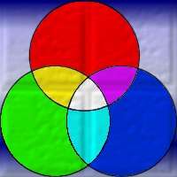
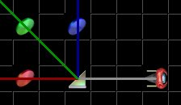
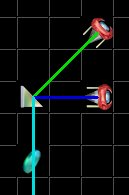

| Beams can actually be many colors. The most basic colors are red, green, and blue. All other colors are made up from these 'primary colors' as they are sometimes called. Below you can see a diagram and a table demonstrating how colors are made. |
|  | This diagram shows how colors mix together. |
| Cyan = Green + Blue |
| Magenta = Red + Blue |
| Yellow = Red + Green |
| White = Red + Green + Blue |
|
| In LightQ some of the pieces provided to you to solve each puzzle can be used to split a color up into it's components or to merge colors together to make new colors.
For example, a prism can be used to split a white beam into three red, green, and blue beams each going in seperate directions. |
|  | Here a prism is used to split a white beam into its component colors (red, green and blue)
- Note that the 3 beams are each hitting a coin of the appropriate color. The white beam is travelling from the left into the prism. |
| A prism can also be used to mix two beams together. For instance, you could use it to mix red, and green together and make a yellow beam and then use that yellow beam to hit a yellow coin. |
|  | Here a prism is used to merge a green beam and blue beam together. The result is a cyan beam which is being used to hit a cyan coin. The green and blue beams are travelling into the prism. |
| This concept can be difficult at first. We recommend you play the levels to get used to how colors are split and merged. |